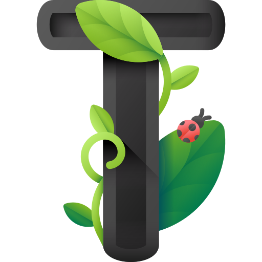
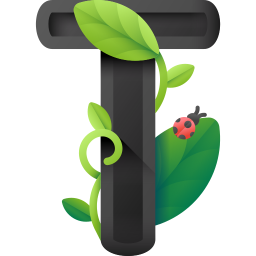

Sorting algorithms are used to sort a data structure according to a specific order relationship,
such as numerical order or lexicographical order.
This operation is one of the most important and widespread in computer science. For a long time,
new methods have been developed to make this procedure faster and faster.
There are currently hundreds of different sorting algorithms, each with its own specific
characteristics. They are classified according to two metrics: space complexity and time
complexity.
Those two kinds of complexity are represented with asymptotic notations, mainly with the symbols
O, Θ, Ω, representing respectively the upper bound, the tight bound, and the lower bound of the
algorithm's complexity, specifying in brackets an expression in terms of n, the number of the
elements of the data structure.
Most of Sorting Algorithms fall into two categories:
Logarithmic
The complexity is proportional to the binary logarithm (i.e to the base 2) of n.
An example of a logarithmic sorting algorithm is Quick sort, with space and time
complexity O(n × log n).
Quadratic
The complexity is proportional to the square of n.
An example of a quadratic sorting algorithm is Bubble sort, with a time complexity
of O(n2).
Space and time complexity can also be further subdivided into 3 different cases: best case,
average case and worst case.
Sorting algorithms can be difficult to understand and it's easy to get confused. We believe
visualizing sorting algorithms can be a great way to better understand their functioning while
having fun!

 
